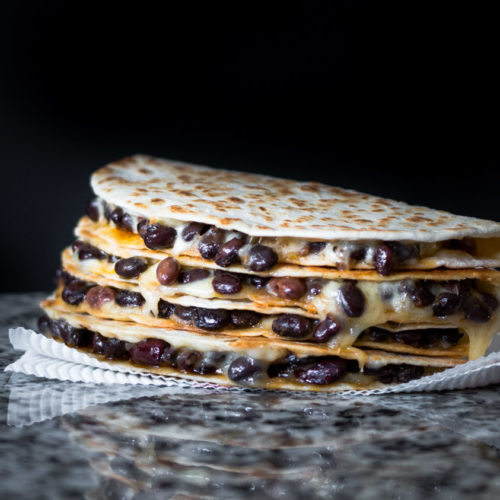

Black Bean and Cheese Quasadilla

Description
A quick and easy lunch packed with hearty deliciousness.
Ingredients
- 1 whole wheat tortilla
- 2 cups shredded Mexican cheese
- 1 cup cooked black beans
- 1/2 tbsp olive oil
Steps
- Warm a frying pan on medium heat. Lay a tortilla in the pan flat, flipping it over after about 30 seconds.
- On one half of the tortilla, sprinkle the cheese and black beans in an even layer.
- Fold the tortilla in half, pressing down with a spatula to make the tortilla edges meet like an envelope.
- Brush some olive oil on the top side of the quasadilla, then flip over and brush the other side.
- Let cook until the bottom side starts to brown and the cheese melts, then flip over and do the same on the opposite side.
- Remove quasadilla from pan and let cool, then cut into slices and serve.